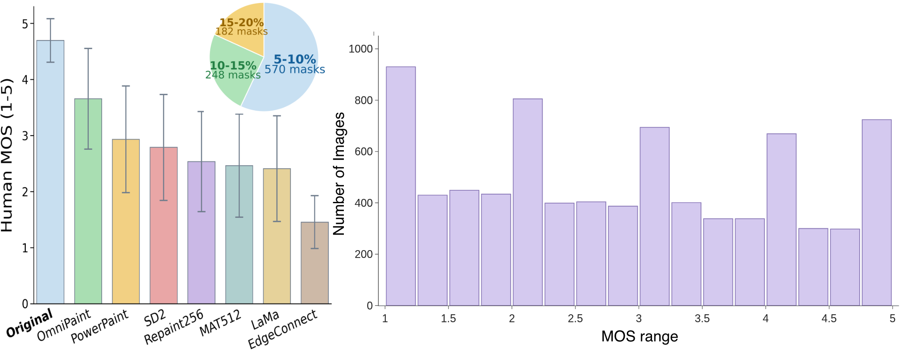
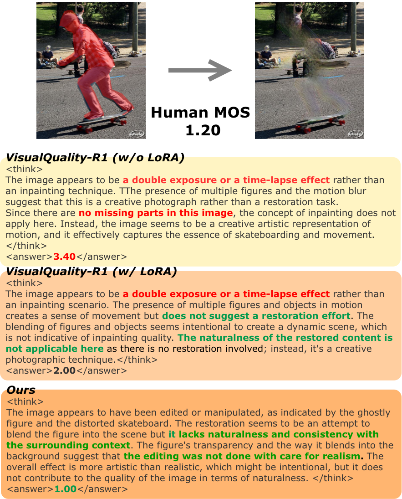

Abstract
Image inpainting aims to restore or modify missing regions in images, but evaluating the perceptual quality of inpainted results remains challenging because valid completions can be diverse and a unique ground-truth reference is often unavailable in practical scenarios. Existing no-reference IQA and MLLM-based IQA methods provide promising alternatives, but they are generally designed for global image quality and lack explicit awareness of the restored region.
To address this limitation, we propose MAIQ, a mask-aware framework for no-reference inpainting quality assessment. MAIQ extends MLLM-based IQA by using the inpainting mask as spatial guidance, combining token-level visual modulation with region-level consistency modeling between the restored region and its surrounding context. Experiments on NIQAD, a human-rated benchmark of 8,000 images generated by diverse inpainting methods, show that MAIQ achieves stronger correlation with human perceptual judgments than representative NR-IQA, object erasure, and reasoning-based IQA baselines.
Method

MAIQ takes an inpainted image and its binary mask and predicts a score aligned with human Mean Opinion Score (MOS). The mask is resized to the vision encoder's token grid and injected into the visual representation before the MLLM reasons about quality.
- Visual Mask Adapter
- Maps the token-level mask to token-wise FiLM scale and shift parameters. Unlike hard masking, background tokens are kept, so the model retains full-image context while learning which features matter for the restored region. The final projection is zero-initialized, so training starts from identity.
- Region-Consistency Module
- Computes channel-wise means and standard deviations of tokens inside and outside the mask, projects this inner–outer descriptor to region-level FiLM parameters, and applies them only to restored-region tokens.
- Reasoning and rewards
- Built on VisualQuality-R1-7B (Qwen2.5-VL). The model writes a reasoning trace in
<think>tags and a score in<answer>tags. GRPO-style training combines a format reward, a differential ranking reward over MOS pairs, and an absolute-score reward, with LoRA on the LLM decoder.
NIQAD Dataset
The Naturalness-based Inpainting Quality Assessment Dataset (NIQAD) is built from 1,000 COCO images. For each, an object covering 5–20% of the image is masked, dilated to include its boundary, and inpainted by seven methods spanning GAN- and diffusion-based families. Annotators rate perceptual naturalness as a standalone image, not similarity to the original.
- 8,000 images: 7,000 inpainted and 1,000 originals
- 7 inpainting methods: MAT, EdgeConnect, LaMa, RePaint, PowerPaint, SD2-inpainting, OmniPaint
- 40,000 ratings from 167 annotators, five per image on a 1–5 scale

Results
On the NIQAD test split (800 images), MAIQ reaches 0.758 SRCC and 0.752 PLCC with human MOS, 0.066 SRCC above the strongest baseline, TOPIQ. Describing the mask in the prompt helps Q-Align only slightly, which suggests that prompt-level guidance alone is not enough without modulating the visual tokens.
| Method | SRCC | PLCC |
|---|---|---|
| General NR-IQA | ||
| QualiCLIP | 0.456 | 0.418 |
| DBCNN | 0.639 | 0.644 |
| MANIQA | 0.677 | 0.681 |
| TOPIQ | 0.692 | 0.693 |
| MLLM-based IQA | ||
| Q-Align, original prompt | 0.545 | 0.552 |
| Q-Align, inpainting prompt | 0.558 | 0.563 |
| Q-Align, mask prompt | 0.570 | 0.575 |
| Q-Hawkeye | 0.290 | 0.292 |
| VisualQuality-R1, zero-shot | 0.354 | 0.282 |
| VisualQuality-R1, fine-tuned | 0.604 | 0.597 |
| Object erasure | ||
| ReMOVE | −0.082 | −0.085 |
| MAIQ (ours) | 0.758 | 0.752 |
| Variant | SRCC | PLCC |
|---|---|---|
| MAIQ full | 0.758 | 0.752 |
| without Visual Mask Adapter | 0.692 | 0.685 |
| without Region-Consistency Module | 0.717 | 0.708 |
| without absolute-score reward | 0.746 | 0.738 |
| without differential ranking reward | 0.743 | 0.751 |
MAIQ also generalizes: leave-one-generator-out evaluation gives a mean per-generator SRCC/PLCC of 0.560/0.563 (0.579/0.594 with all generators), and zero-shot evaluation on 700 inpainted CelebAMask-HQ images reaches 0.665/0.651.
Qualitative Example

Citation
@InProceedings{Koshimoto_MAIQ_WACV2027,
author = {Koshimoto, Yota and Uchiyama, Taiki and Isogawa, Mariko},
title = {{MAIQ: Mask-Aware No-Reference Image Quality Assessment for Inpainting}},
booktitle = {Proceedings of the IEEE/CVF Winter Conference on Applications of Computer Vision (WACV)},
year = {2027}
}